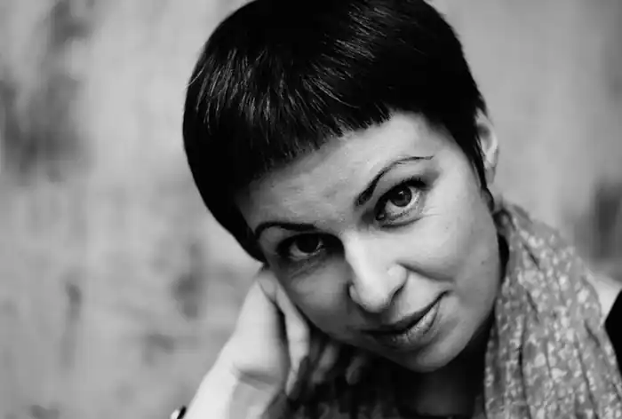

Народилася у 1973 році у Львові. За освітою — філологиня, закінчила Львівський та Фрайбурзький університети, за фахом — журналістка і перекладачка з польської, німецької та російської.
У студентські роки належала до жіночого літературного угруповання ММЮННА ТУГА (за першими літерами імен: Мар'яна Савка, Маріанна Кіяновська, Юлія Міщенко, Наталка Сняданко, Наталя Томків і Анна Середа; ТУГА — "Товариство усамітнених графоманок").
Друкується у львівській та київській пресі ("Львівська газета", "Суботня пошта", "Дзеркало тижня"), журналах "Профиль-Украина" й "Український тиждень". Повість Снядянко "Колекція пристрастей, або Пригоди молодої українки" була опублікована у 2004 році в Польщі й одразу ж увійшла до десятки бестселерів. Ця книжка також перекладена і видана російською — "Коллекция страстей" (М.: "Идея-Пресс", 2005). Російською вийшов роман "Синдром стерильності" під назвою "Агатангел, или Синдром стерильности" (М.: "Флюид", 2008) У 2013 році видала роман "Фрау Мюллер не налаштована платити більше". Станом на 2016 рік Співпрацює з краудпаблішинговою платформою Komubook як перекладачка. У 2017 році у "Видавництві Старого Лева" вийшов новий роман Сняданко — "Охайні прописи ерцгерцога Вільгельма", у центрі якого особиста історія одного з найекстравагантніших членів імператорської родини Габсбурґів — Вільгельма, більше відомого в Україні за бойовим псевдонімом Василь Вишиваний. У 2021 році у "Видавництві Старого Лева" вийде новий роман Сняданко — "Перше слідство імператриці", де оповідь ґрунтується на документальних матеріалах з життя легендарної австрійської імператриці Сіссі. Присутній політичний підтекст і карколомні пригоди. У червні 2020 року Наталка Сняданко увійшла до довгого списку літературної нагороди Центральної Європи "Ангелус" за книгу "Фрау Мюллер не налаштована платити більше". Наталка Сняданко — перекладачка з німецької (Франц Кафка, Фрідріх Дюрренматт, Ґюнтер Ґрасс, Юдіт Германн, Стефан Цвайґ), польської (Чеслав Мілош, Збіґнєв Герберт, Ярослав Івашкевич, Ян Бжехва) та російської (Андрій Курков). Членкиня Українського ПЕН.